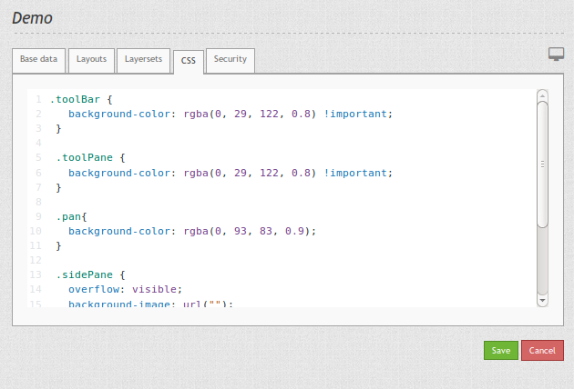

How to change the style of your application with the css-editor?¶
From Mapbender3 version 3.0.4.0 you find a css-editor for every application which easily allows you to change the style (colors, sizes, icons, ...). In the editor you can define additional css classes, that will overwrite the default style.
Firebug can help you to find out the css-classes you want to change.
{kind=link}
With the following css you can change the color of the toolbar and navigation toolbar. You also set the background and width of the sidepane.
.toolBar {
background-color: rgba(0, 29, 122, 0.8) !important;
}
.toolPane {
background-color: rgba(0, 29, 122, 0.8) !important;
}
.pan{
background-color: rgba(0, 93, 83, 0.9);
}
.sidePane {
overflow: visible;
background-image: url("");
background-color: #eff7e9;
}
.sidePane.opened {
width: 350px;
}
{kind=link}
Until Mapbender3 Version 3.0.3.2 you had to create your own template with your own css-file to overwrite the default style. The new css-Editor makes styling much easier. The documentation to create your own templates you find at How to create your own Template?.